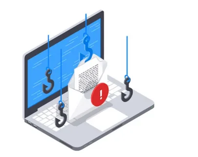

Примеры фишинга |
Защита от фишинга |
Разновидности |
Осторожно, фишинг! |
|---|
что такое фишинг?

Mы хотели рассмотреть данное актуальное на сегодняшний день информационное преступление – фишинг. На страницах сайта мы хотели рассмотреть данное актуальное на сегодняшний день информационное преступление – фишинг. А также проанализировать существующие сегодня проблемы выявления, устранения, профилактики таких преступлений и определить, какие существуют способы борьбы с киберпреступностью, в частности, с фишингом.
Фи́шинг - вид интернет мошенничества с использованием информационных технологий и социальной инженерии. цель злоумышленника получить ваши идентификационные данные(пароли, логины от социальных сетей, номера банковских карт, аккаунты платежных систем), которые он сможет использовать в дальнейших целях ,действия направлены на присвоение чужих денежных средств . специфика фишинга в том, что жертва мошенничества предоставляет свои конфиденциальные данные добровольно, для этого злоумышленники используют поддельные фишинговые сайты , email рассылку, всплывающие окна , таргетированную рекламу .как правило мошенники маскируются под известные компании, приложения социальных сетей или сервисы электронной почты. Фишинг является самым популярным видом мошенничества в интернете. Технически он постоянно совершенствуется, из года в год фишинг атаки становятся, все сложнее и сложнее, соединяя в себе другие виды мошенничества.